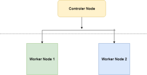
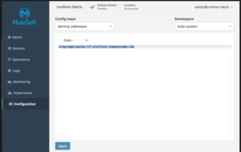

The most interesting development on Mulesoft’s Anypoint platform in recent past is the Advent and promotion of the Runtime Fabric.
Runtime Fabric Engine is essentially replacement of the on Premise installation of mulesoft aka. Good old mule engine. But it combines the features of both cloudhub and on-prem. Apps deployed to the RTF are deployed to a single standalone container and does not interfere with the resources of the other apps in the server. Also, apps can be monitored and managed directly from the Anypoint platform cloudhub. Although a catch here is that there is another console to manage your containers and see the logs which is called admin panel it’s like Mule Management Console itself but specially designed to manage the RTF.
Architecture –
Runtime fabric has the concept of worker nodes and controller nodes –
- Controler nodes – The are primary nodes responsible for installing and keeping the setup of the RTF, it also has distributed database, load balancer service and couple of more services to let you manage your cluster.
- Worker Nodes – These nodes are basically the vm containers in which your mule apps, proxies and api gateways are installed.

The reason why it’s interesting is because –
- Uses cutting edge technology like containers and Kubernetes
- App deployment follows the container approach i.e. each app is deployed to a standalone container.
- By utilizing the power of Kubernetes internally, clusters can be built of the applications for resilience and reliability.
- Provides management Console to maintain the Containers OOB –

- You can Run multiple versions of mule applications in a same fabric. This is possible because power of containers is utilized here and we get this feature which is available which we can get in cloudhub itself.
- There is no concept of hard setup of “cores allocation” you can allocate the cores and memory as you wish for e.g. you can allocate 0.15 vCores to you app and say 300 MBs of RAM as per your requirement.
- Both vertical and horizontal Scaling are supported. Vertical by increasing RAM and CPU dynamically and Horizontal by adding more Workers/ Servers to the cluster.
- Apps are installed to your on-Prem but can be managed directly from The anypoint platform.
Steps to Deploy the Applications to RTF –
- Create a jar archive of your project from anypoint studio or use maven command to create the archieve
- Open CloudHub console and goto runtime section
- Select the deployment target to your runtime fabric and upload the jar file there
- Select the number of cores and RAM you wish to allocate for the application
- In the ingress section select to enable the inbound traffic to the application.
- In the properties section define your properties, the best way is to define only environment variable there and code should pick properties from a property file which you have defined.
- Wait for some time and your application will be up and running.
By Default all the apps deployed to RTF in your cluster will be HTTPS by default if you have a load balancer and the base url will be something like –
https://<base-url>/<application-name>/<application-path>
e.g. https://thevibhor.com/workday-integration/api/employees
The URL Also comes up when you deploy the application and it is displayed to your apps home screen.
Few Shortcomings and Enhancements required –
- Anypoint application custom notifications are not enabled for apps deployed to RTF and is only available for the ones deployed to cloudhub this increases developers work as we have to create a custom API to send notifications based on the Events.
- You have to open the OPS center everytime you have to check the logs to check what actually went wrong, this could be improved if the details are available directly in the cloudHub management console.
- Bugs in API KIT Router, which got fixed after creating ticket to the team, thanks for the quick response there. Use version 4.2.x to deploy your applications and you will be fine.
- After deploying the application when you run it for first time it takes some time but its not that considerable.
Overall the Product is awesome and its appreciated by developers and architects allover the world for ease of use and loads of features it provides. Mulesoft Keeps on inventing new stuff and improve their product, Kudos